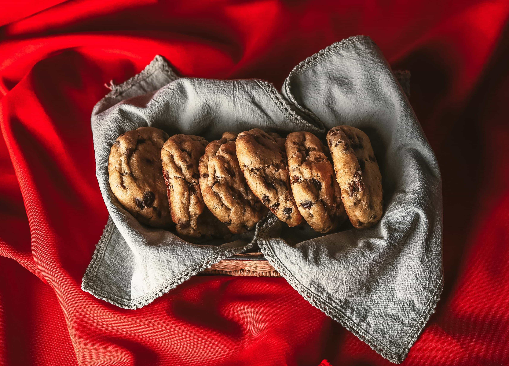
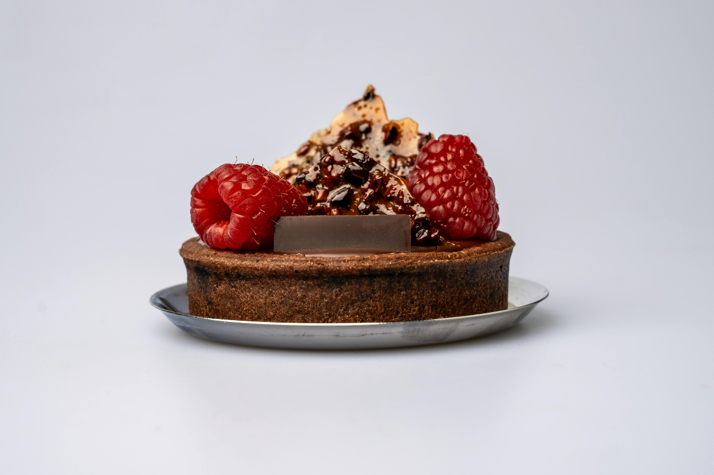
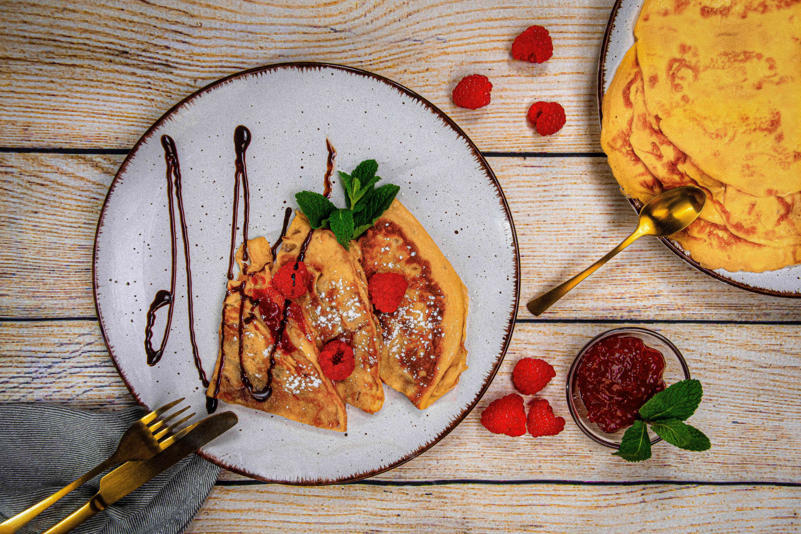

Precision bakes, cozy results.
Home Baking & Dessert Creations
A pastry-inspired recipe collection with clear steps, technique notes, and troubleshooting tips
Image/photo by: Israel Guerrero Santacruz. Aug 26, 2012. Source: Pexels.
Featured Recipes
Three polished bakes to start with.


Technique Spotlight
Small details that make bakes look and taste professional.
Brown butter cues
Watch for abmer color and toasted milk solids. Cool before mixing to prevent greasy dough.
Crepes batter rest
Resting reduces bubbles and improves texture. Strain for a smoother pour.
Ganache ratios
More cream equals softer set. For tart filling, a 1:1 ratio is a strong starting point.